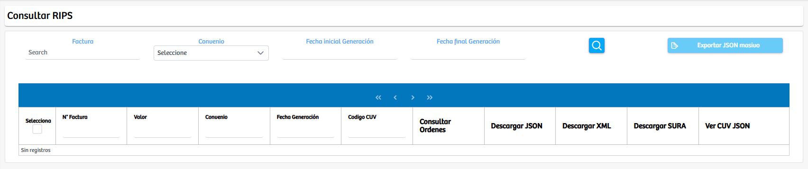
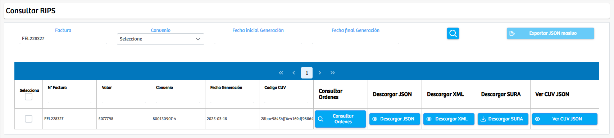
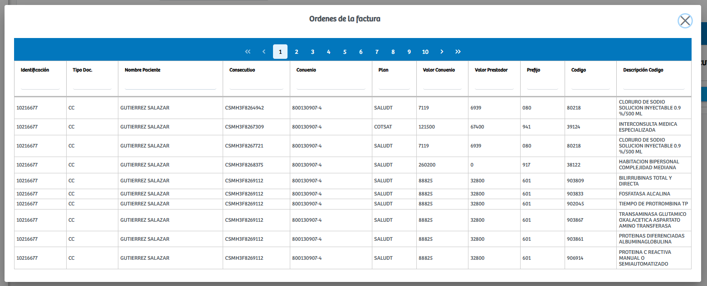
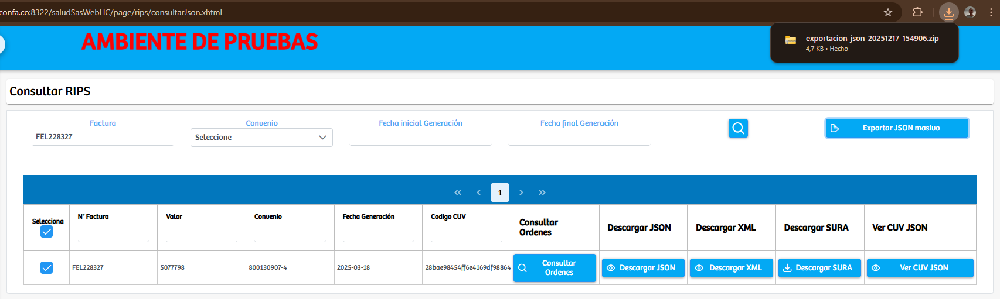

Modulos Sas-Web
Funcionalidades
Consultar RIPS
El módulo Consultar RIPS está diseñado para facilitar la búsqueda, validación y descarga de la información asociada a los RIPS generados en el sistema. Al ingresar a esta vista, el usuario encuentra un conjunto de filtros que permiten delimitar la consulta según la necesidad: por número de factura, por convenio, o por un rango específico de fechas de generación. Una vez ingresados los datos en el campo correspondiente y ejecutada la búsqueda, el sistema retorna todos los registros que coincidan con los criterios seleccionados.
 Cada registro mostrado incluye información relevante como número de factura, valor, convenio asociado, fecha de generación y el código CUV. Además, cada fila incorpora varias acciones disponibles para gestión documental y operativa. El botón Consultar Órdenes abre un modal detallado que muestra todas las órdenes vinculadas a la factura seleccionada, incluyendo identificación del paciente, plan, valores y descripción de los códigos facturados. Por otro lado, los botones Descargar JSON, Descargar XML, Descargar SURA y Ver CUV JSON permiten obtener cada uno de los archivos de soporte en su formato correspondiente.
Asimismo, el módulo incluye la opción Exportar JSON masivo, la cual se habilita cuando el usuario selecciona uno o más registros mediante la casilla de verificación. Al ejecutarse, el sistema genera y descarga automáticamente un archivo comprimido que contiene todos los soportes JSON asociados a los registros seleccionados, facilitando así la gestión masiva de documentación RIPS. Esta funcionalidad resulta especialmente útil para auditorías, procesos de envío a aseguradoras o para respaldo interno de información.
